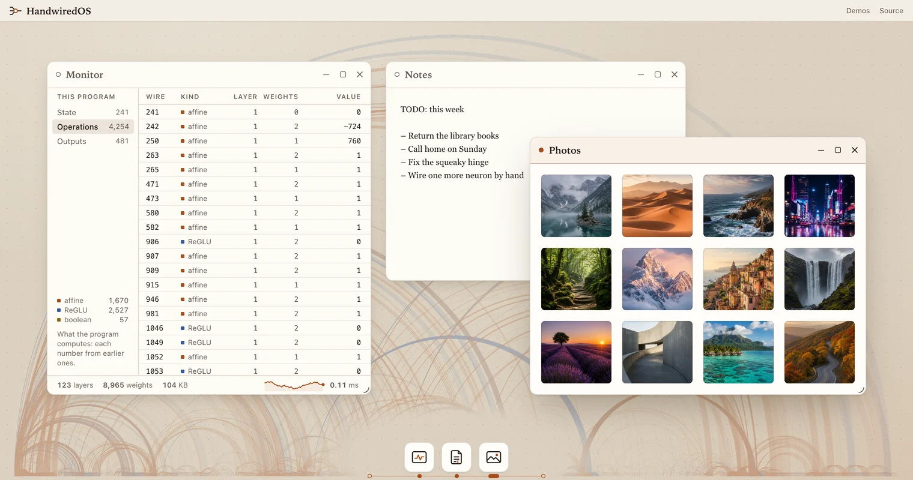

Turn your regular JavaScript code into a neural net.
No training, exact yet also fully differentiable, runnable in a browser without GPU.
Math.min(a, b), wired by hand as a − relu(a − b): a weighted sum, a ReLU gate and a second weighted sum. The builder function emitMinimum emits these three, and the Mini OS below is thousands of operations like them.Demos

Mini OS
A small desktop written in JS, transformed with Handwired. Giant lists, animation, stacking, scrolling, drag, input, pictures, all rendering to regular DOM.
- weights
- 9,909
- layers
- 130
- training
- 0
Learned gallery
Unfreeze a compiled program’s weights & train them in real time.
Search 100,000 JSON documents
The regex matching, JSON parsing & highlighting are all written in JS, then turned into WebGPU kernels for massive parallelism.